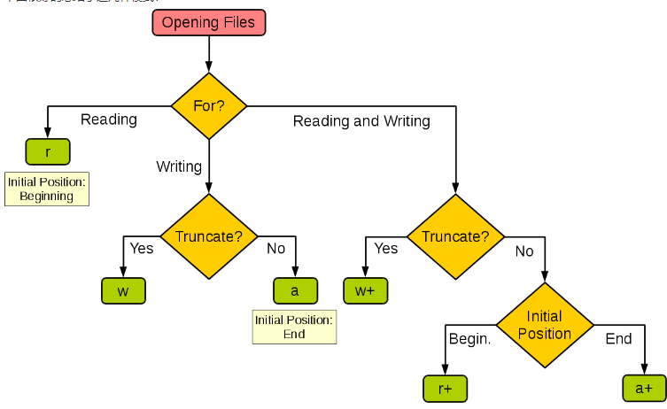

with open("D:/Temp/a.txt", mode='w', encoding='utf-8') as f:
f.write('hello')
with open("D:/Temp/a.txt", mode='r', encoding='utf-8') as f:
content =f.read()
print(content)一般用a+比较好

Truncate：覆盖
Initial Position：初始位置
一些功能：
seek(X)：光标订到X个字节
read(X)：读X个字符，默认全部
tell()：告诉你光标的位置
print(bytes('你好',encoding='gbk').decode('gbk'))